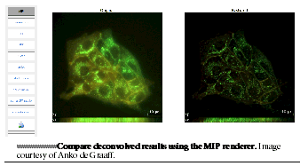
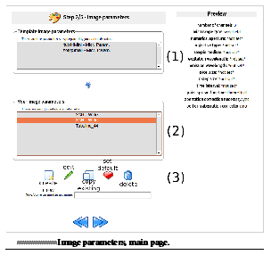

`CHAPTER 1 <HRMUserManual.htm#50532372_pgfId-931907>`__ Introduction 1¶
`CHAPTER 2 <HRMUserManual.htm#50532397_pgfId-919311>`__ Advanced deconvolution in HRM 7¶
The Restoration Parameters (3/5)19
Results26
`CHAPTER 3 <HRMUserManual.htm#50532368_pgfId-923766>`__ Administrator’s guide 31¶
How HRM communicates with Huygens Core33
Requirements and technical features33
Introduction¶

What is HRM
Welcome to the user guide for the Huygens Remote Manager (HRM)! HRM is a web-based collaborative open-source interface to Huygens Core to do multiuser, scheduled, batch deconvolution.
With a Huygens Remote Manager, it is possible for a large group of users to work with Huygens on a central system through an easy interface. Allowing for central administration in a cluster. It is web-based and therefore easily accessible from many places. It can be accessed from your workstation, home PC or tablet.
An HRM server can distribute work among several computers smartly, which allows for intelligent use of calculation hardware and fast calculation times. It combines flexibility in hardware choices with an intelligent queue, allowing small jobs to go in between large ones.
Who makes HRM
HRM is an open source project, this means that the code is freely accessible and it can be adapted and modified to any needs by any user. It is developed by Huygens users at the Montpellier Rio Imaging facility, the Facility for Advanced Imaging and Microscopy at the Friedrich Miescher Institute (FMI, Basel), the BioImaging and Optics Platform at the Ecole Polytechnique Fédérale de Lausanne and the Department of Biosystems Science and Engineering at the ETH Zürich. Scientific Volume Imaging participates in this project by contributing its experience in deconvolution and software engineering. HRM is a free and open source.
Where to find HRM
HRM is a free and open source project, and can be found in SourceForge 1.
More information about HRM and links to other HRM resources can be found in the HRM online article of the SVI Wiki2. Instructions for online testing, downloading and installing HRM are also linked on that page.
Installing HRM on a running regular web server is very difficult. Apart from the installation instructions that come along with the source code, other practical guidelines can be found in the project’s official site3 and in the SVI Wiki 4.
Getting started
Here is a quick guide to get you started with deconvolution. To optimize results, please refer to See Advanced deconvolution in HRM.
1. Create an account¶

- If your imaging facility already has an HRM server, go to the server and create an account. Names are case sensitive. Contact your system administrator for activation.
- If you don’t have an HRM system running, it is still possible to get familiar with Huygens by creating an account on the HRM demo server5 at SVI, as seen in See The registration page for the HRM demo server.

2. Upload a raw image¶
Go to raw images and upload a file via the upload icon. Select a file from your PC. Several files can be uploaded at once.

3. Deconvolve¶
From the main screen, go to start a job , entering the deconvolution process.

(1/5) Select files. First Select the desired file type, all files of that format in the deconvolution directory will be listed. Use the up en down icons to choose which files will be deconvolved. Multiple files can be selected, if they have the same format. When selecting a file, a preview can be generated on the right panel when requested. This preview provides information about your image, including the dimensions, sampling and the number of channels used.**

(2/5) Image parameters . Select a parameter set, this parameter set contains information about how the image was created. Choosing the correct parameters is crucial for obtaining good deconvolution results.
Use predefined (easy) . There are a number of predefined deconvolution formats by your administrator. Make sure that the microscope type and the correct number of channels is selected (visible in the preview on the previous page). Proceed to the next step.
Create your own (harder) . Depending on the file format, some parameters are already provided by the metadata. HRM will inform whether usable metadata is present. To use the parameters in the metadata, leave the field blank. For advanced users it is possible to tune and tweak their parameters to optimize results, this is explained in See Advanced deconvolution in HRM.
First create a new set, by entering a set name and press the new parameter set icon. Alternatively, it is possible to edit an existing set.
The new parameter set opens, select the correct number of channels (visible in the preview in the first step (1/5) ). And select theoretical PSF.
Next are the optical parameters. You need to know the parameters of your experiment and enter them, some of these may be included in the metadata as illustrated in See The first optical parameters page. Shown is which parameters must be provided and which may be 0mitted. Note that there are two pages of optical data. There are several calculators available to help you enter the correct data. Additionally, it is possible to calculate the pixel size by dividing the size of the image by the number of pixels in that dimension, which are both shown in the preview of the first step (1/5) .

Finally select whether you want to enable depth-dependent correction of the PSF. NO is default. YES improves the image quality, but also takes slightly longer to calculate. Here it is additionally necessary to submit from which side of the image the measurement started.
(3/5) Restoration parameters . Choose the parameters that will communicate with Huygens how the image must be restored.
Use predefined (easy). Again a number of predefined sets from your administrator are available. It is worthwhile however to edit the set and obtain the appropriate SNR (see next).
Create your own (fairly easy). Create or edit a set and enter the setup.
- For deconvolution algorithm choose Classic Maximum Likelihood Estimation.

- Now use the SNR calculator. Upon entering an image, the calculator shows estimated previews of restored images for different SNR, along with recommendations by the software, as seen in See The SNR estimator. Image is courtesy of Anko de Graaff from the Hubrecht Institute.. Pressing forward means accepting the recommendations. Note that for each channel an SNR must be chosen. This SNR is used for the entire set of images, selected in step (1/5) . If one image has less channels than submitted, only the first are used. As a guideline, use 20 for confocal microscopy and 40 for widefield microscopy.

- Background mode. Choose automatic background estimation.
- Stopping criteria. The deconvolution will stop when either of two criteria are met. 20 iterations and a quality change of 0.05 are good default values.
- (4/5) Analysis parameters . This step is only available if you have a coloc license and if there is more than one channel available for colocalization. Choose which analysis to perform on the image. The colocalization6 analyzer is already available on HRM and more options and tools will follow.
Use predefined (easy) . Again there are a number of predefined options, choose whether you want colocalization or not.
Create your own (medium) . Create or edit your own set. First choose whether you want Huygens to do a colocalization calculation. If you do, choose for which channels you want colocalization (default all channels). Next choose your colocalization coefficients, thresholds and map. As default select all the colocalization coefficients, choose automatic estimation for the threshold and Pearson for your colocalization map.

(5/5) Launch . Check whether all the configurations are correct and choose an output format. SVI-HDF5 is well suited for the Huygens environment and is very good at carrying metadata and compressing file data. ICS is a good allrounder. To deconvolve press the big green button at the bottom of the page.

4. Queue¶
The job is now placed in the queue. HRM has a smart queue, which manages the jobs of several different users in an intelligent way. Allowing small jobs to go in between large ones. Here jobs of all users can be viewed and own jobs can be deleted.

5. Results¶
After deconvolution the images are placed in the results folder, accessible via the main menu. From there, files can be downloaded or viewed from the server.* * Click on detailed results in the right window to preview and compare the deconvolution result with the original image, illustrated in See Compare deconvolved results using the MIP renderer. Image courtesy of Anko de Graaff..


Note¶
To optimize your deconvolution results it is necessary to understand the different properties of your image and some of the mechanisms behind deconvolution. If you’ve followed this guide, many properties have been assigned default values. We would like to encourage the users to read into and explore different settings, which will help you improve your deconvolution results. Some more in-depth knowledge is given in chapter See Advanced deconvolution in HRM.
Advanced deconvolution in HRM¶
This chapter explains in more detail how to create and launch deconvolution jobs in HRM. Instructions on how to inspect deconvolution results and how to access statistics in HRM are also included here.
It is recommended to visit an HRM site so that the job launching process can be reproduced. An HRM account at an imaging facility can be requested by sending an application to the corresponding administrator. This task can be performed from within HRM as highlighted in See Login and registration page. Upon clicking on the register link, the user is asked to fill out a short form that will be forwarded to the administrator.

If the imaging facility of interest does not provide access to an HRM installation it is still possible to get familiar with HRM by requesting an account for the HRM demo server7at SVI.
With an HRM account deconvolution jobs can be run remotely, in batch mode, with just a few clicks.

The starting page
Once logged in HRM, the starting page is displayed, as shown in See The main menu.. From this page the user can manage the deconvolution jobs as well as other HRM administrative tasks. The following shortcuts are available:
- Start a job : Start a new deconvolution or a batch of deconvolutions.
- Queue status : See all jobs, manage owned jobs.
- Raw images : Upload new data for deconvolution.
- Results: view and download deconvolved data.
- Statistics : Summary of job statistics.
- Accoun t: View and change login data.

Raw Images
To upload images for deconvolution, go to the Raw Images section. Press the upload button as shown in See Raw images section. Files can be uploaded and deleted here.. Next, use the browse button at the bottom of the page to select a file for upload. Once a file has been added, it is possible to add more files using the add more files button in red. Additionally it is possible to add several files at once, by compressing them to an archive and uploading the archive. Huygens will automatically depackage the archive and add the embedded files. Note that this will also decrease your upload time, since the data is compressed.

After all the desired files have been selected, upload them using the upload icon again. When finished all the files will be added to your Raw Images directory. This is a personal directory with all the user’s unprocessed images.

Start a Job
To start a new deconvolution click on the Start a job icon. Starting a new deconvolution job is split into 5 main steps:
- Selection of the raw images.
- Image parameters: enter parameters of the image and microscope.
- Restoration parameters: determine which parameters to use for deconvolution.
- Analysis parameters: determine which analysis to perform. Only available when a colocalization license is present.
- Launch: overview and selection of the output file format.

Select images (1/5)
In the Select Images the user can add images to the deconvolution list, only one file type (per extension) can be deconvolved per batch, as illustrated in See Select images page. Only files of the selected format are displayed, on the right is a preview of the selected image. Image is with courtesy of Drs. Jeff Tucker, NIEHS.. Select the desired file format and use the up and down arrows to select the images for batch deconvolution. Several images can be selected at once to do batch processing. Keep in mind that these images must share the same microscopic parameters in order to obtain good deconvolution results. This is generally true if the images are recorded with the same setup.

When an image is selected a preview is displayed on the right panel whenever possible. The user can click on Click to generate preview to see a thumbnail of the image.

Image format¶
The format of the image file is directly linked to the acquisition system of the microscope (LEICA, ZEISS, Tiff series, etc).
Both HRM and the underlying engine, Huygens Core, use naming standards such as the LEICA standard. When handling exotic tiff file names, such as the tiff exports from PerkinElmer UltraView, it is recommended to rename the files before proceeding with the deconvolution jobs. There are freeware tools available to systematically change names of large file groups8.
A few examples of different tiff standards include:
- Olympus FluoView (*.tiff): This is a particular tiff format (FM multi-layer) that can store multiple 2D planes in a 3D stack (single file).
- Leica series (*.tiff): Series of 2D images, with Leica Standard naming. Below, two examples of this standard:
- XYZ-time, single channel: name_t00_z000.tif.
- XYZ-time, multiple channels: name_t00_z000_ch00.tif.
- Generic Tiff (*.tiff): Sequentially numbered series of 2D tiff images. Upload a single 2D image. When the automatically load file series if supported box is checked, all files from the series will be uploaded creating a 3D (time) series.
When all the files are selected, click on the big right arrow at the bottom of the page to continue to the image parameter step.

The Image Parameters (2/5)
In Start a job - Image Parameters the image parameters can be specified and saved. The image parameters are grouped in sets, which describe the microscope and the conditions used to acquire the images. A parameter set can be reused in future deconvolution jobs. This will make sense as long as the involved images have been acquired under the conditions specified in the parameter set.
The Start a job - Image Parameters page shows 3 main areas (see See Image parameters, main page.):
- Template Image Parameters (1) : parameter sets created by the HRM administrator. These can be used as references. They can be copied and changed by the HRM users.
- Your Image Parameters (2) : The user’s parameter sets. These may be based on administrator templates or created by the user with customized values.

- New/Clone Parameter Set Name (3) : Entry field for the name of a new parameter set. Type a name for the new set and click on the add button. A new set of parameters will be created. It is advised to write clear, easy-to-understand names for the parameter sets.

In order to handle (create, delete, edit etc.) sets, there are icons at the bottom of the page. Each with a tooltip, stating it’s function.
A set of parameters consists of a number of relevant microscopic parameters. These provide Huygens Core with information about the images that will be deconvolved. The microscopic parameters of a particular set can be seen in the preview on the right or by editing it.
When a set is edited its parameters are displayed with links to the SVI-wiki where explanations are provided. These links are represented by question mark icons throughout HRM.

Import metadata¶
Most microscopy file formats allow for saving metadata. If the acquisition system works with such file formats it can save parameters such as the sampling sizes, pinhole sizes, numerical aperture, etc, in the raw data. In HRM the user can choose whether this information (image metadata) should be used in the deconvolution job. Some file formats, though, lack the structure to save all the relevant information of a parameter, e.g. physical units. For this reason, HRM informs, per file type, how reliably the metadata can be used (see See Metadata warnings. When trusted metadata is present, HRM will inform on this, leave blank to adopt metadata values.). Leave fields blank to accept the metadata. HRM assists the user in this regard, showing messages on which parameters may be skipped and which must be provided. Notice that entering the image parameters for a deconvolution job in HRM can be skipped almost entirely if the images contain good, complete, reliable metadata, while the deconvolution results will be optimal.


At the end of the deconvolution job, the user may get a notification email and a link to the restored image, a summary table can be viewed listing which parameters were taken from the metadata, as well as their values (see See Parameters used during deconvolution. Parameters retrieved from the image metadata are also shown.).

When entering the image parameters, the following properties are relevant (See See Raw images section. Files can be uploaded and deleted here.):
Number of channels¶
Number of “fluorescent” channels in the image. Note that no transmission channels can be deconvolved!
PSF¶
The deconvolution needs a Point Spread Function (PSF) to restore the raw data. The Huygens software can compute a theoretical PSF from the parameters of the raw data or it can use a measured PSF. In the latter case, HRM asks for a file containing the measured PSF. In most cases the theoretical PSF works fine.

There are a few more questions concerning the optical parameters of the microscope. See (a) First optical parameters page. Only the microscope type must be provided. (b) Second optical parameters page. Some settings are only applicable for some microscopes. shows a screenshot of these questions in HRM.

- Microscope type: whether a Spinning disk confocal, Single point confocal, Widefield or Multiphoton system was used as microscope to take the image.
- Numerical aperture : The numerical aperture describes the amount of light coming from the focus that the objective can collect. It depends on the half angle of the maximum cone of light that can enter or exit the lens. It is directly linked to the resolution of the objective. The numerical aperture is displayed on the objective, right next to the magnification.
- Wavelengths : Excitation and emission wavelengths of each channel. For the emission wavelength the central value of the emission spectrum of the fluorophore can be considered. Make sure to insert these values in the same order as they were acquired.
- Objective type : Dry or immersion objective (oil, water, glycerol, air).
- Sample medium : The refractive index of the medium in which the sample was embedded (glycerol, polyvinyl alcohol, vectashield or other media).
- Voxel size : The voxel size is a very important parameter for the deconvolution of microscopic images. According to the Nyquist criterion9 its value should not be larger than half the optical resolution of the imaging system. In order to set the voxel size appropriately three different cases can be distinguished depending on the microscope type.
- Voxel size, widefield and spinning disk microscopy : On widefield images, the xy pixel size depends on the physical size of the CCD camera element, the objective magnification, the binning, and the possible magnification factors introduced by the microscope tube and the c-mount. In the frequent case in which the tube factor and the c-mount factor are equal to 1, the xy pixel size is given by:
If a pixel binning is used, it is necessary to take this into account to calculate the pixel size. HRM gives access to a calculator to compute the xy pixel size (see “Calculate from CCD pixel size” at the image parameters page). HRM also shows the ideal voxel size for the given optical parameters (numerical aperture, refractive indexes, etc) so that it can be used as a reference. Make sure to set a voxel size consistent with the optical resolution of the microscope as undersampled images will often show artifacts after deconvolution. Notice that the z-step value can often be found in the metadata of the image.
- Voxel size, confocal and 2-photon microscopy : When using batch processing, the parameters for all images need to be the same. In case of confocal and widefield microscopy, the voxel size is affected by the zooming factor and the frame size for a given objective.
- Backprojected pinhole radius (for confocal and 2-photon microscopy, shown in `See (a) First optical parameters page. Only the microscope type must be provided. (b) Second optical parameters page. Some settings are only applicable for some microscopes. <HRM/HRM%20Deconvolution%20Jobs.htm#50532397_62198>`__) : In confocal images the “backprojected pinhole radius” is the radius of the pinhole as it would be seen on the focal plane. This number can be calculated in HRM by clicking on the “Backprojected pinhole calculator” link. The calculator will ask for the objective magnification and the actual pinhole radius for the computation of the backprojected radius.
- Backprojected pinhole spacing and radius (for Spinning disk microscopy) :
HRM also counts on a calculator to compute the backprojected value of the pinhole spacing for spinning disk microscopy (See See Select files to measure PSF from. Active when a measured PSF is chosen). This calculator lists a number of microscope models to assist the user in the calculation. If, for example, a Yokogawa disk is selected from the list, the pinhole radius is set to 250 nm and the pinhole spacing is set to 2.53 μm. From these values, combined with the magnification, HRM computes the backprojected counterparts (as they would be seen on the focal plane).

Point Spread Function¶
As the Point Spread Function (PSF) is the basic “brick” of which the images are “made”, one should record details at least on the scale of the PSF to gather all the available information. Failing at that may spoil any attempt to do deconvolution, because deconvolution works on the PSF scale. If a voxel is much larger than the PSF, the deconvolution simply cannot be done, then there are many PSF’s recorded in one voxel and it becomes impossible to distinguish between those. In HRM, one can choose to have Huygens Core calculate a theoretical PSF compatible with the raw image or one can upload the measured (distilled) PSF that most resembles the real PSF of the imaging system. In practice the theoretical PSF computed from the image parameters can significantly differ from the experimental (distilled) PSF, because of unavoidable little misalignments and imperfections in the microscope system. Usually a measured PSF is larger and more asymmetric than a theoretical one. The use of a measured PSF can thus improve the deconvolution results.
- Distilled PSF file selection : A measured PSF can be derived from images of fluorescent beads, for example using the SVI Huygens PSF Distiller. However a good PSF is relatively complicated to measure, as one needs to acquire multiple images for each wavelength. Additionally the measurement must be done with the exact same conditions as the images for which the PSF is intended (See See spherical aberration correction. Schematic guideline to spherical aberration correction methods.). HRM will ask to select one PSF file per channel if a measured PSF option is chosen. When selecting a file, those files that don’t suit the current image parameters are highlighted in red to stress that they are not good PSF candidates.

- Theoretical PSF, spherical aberration correction : if necessary HRM will ask whether to correct the theoretical PSF for spherical aberration (See See Spherical aberration correction. Specify which correction to use.). In general, better deconvolution results are achieved if the spherical aberration correction is applied. A few more parameters are necessary for the spherical aberration correction. See spherical aberration correction. Schematic guideline to spherical aberration correction methods. shows a schematic guideline to the different methods of correction. Note that these are only guidelines and the applicability of each method differs per case.
- Specify sample orientation : Specify the position of the coverslip with respect to the dataset (Plane 0 is CLOSEST / FARTHEST from the coverslip ).
- Correction mode : Due to the spherical aberration the PSF size and shape changes with the sample depth. To correct for this effect Huygens Core will generate a “dynamic” PSF adapted to the different positions10. Use the Spherical Aberration correction only if there is a significant mismatch between the refractive indexes of the objective and of the sample medium, as the processing is significantly more time-consuming.

- Deconvolution with PSF generated at user-defined depth (advanced) : A unique PSF will be used, but calculated at a sample depth defined by the user. The main idea is to use a “mean” PSF to partially correct for spherical aberration. Useful when a user is interested in an object at a specific depth.
- Perform automatic correction : In this case the stack will be divided into a certain number of bricks. Each brick will be deconvolved with a PSF adapted to the depth, considering the mismatch of refractive indexes between the sample medium and the objective medium.
- Depth-dependent correction on few bricks (advanced) : The number of bricks into which the stack will be divided for the deconvolution is limited. The deconvolution will be faster than in the case “Perform automatic correction”.
- Depth-dependant correction performed slice by slice (advanced): A new PSF is calculated for each slice.
At this point, the parameter set is ready and can be saved. The list of all the user’s parameter sets will be shown.
Select one parameter set for the deconvolution job and click on the big right arrow to continue (see See Image parameters, main page.).

The Restoration Parameters (3/5)
A set of restoration parameters instructs Huygens Core how to restore your image. Some of these parameters are used before deconvolution, the background correction, for example, subtracts a background value from the image before deconvolution. Most options refer to the deconvolution itself, for example the Signal to Noise Ratio (SNR), the number of iterations (stopping criterium) or the convergence quality to a solution (stopping criterium).
The background and the SNR are both linked to different important acquisition parameters, changing these in the experimental setup will most likely change the SNR and background of the recorded image, requiring them to be reset in the restoration parameters set.

- Gain / offset
- Time exposure / scanning velocity
- Summing / averaging
- Laser power
- Spectral detection range

The initial page of the Restoration Parameters (see See Restoration Parameter Step. At the end of this step a restoration parameter is selected. On the right a summary of the selected set is displayed.) resembles the Image Parameters page (See See Image parameters, main page.). Thus, templates made by the HRM administrator can be selected, copied, and edited for customization. New parameter sets can also be created from scratch.

A Restoration Parameter set includes the following parameters (See See Restoration Parameter set: Deconvolution algorithm, SNR estimation, background mode and stopping criteria.):

Deconvolution algorithm¶
Two deconvolution algorithms are available to process the data. The Classic Maximum Likelihood Estimation (CMLE) algorithm and the Quick Maximum Likelihood Estimation (QMLE) (See See Restoration Parameter set: Deconvolution algorithm, SNR estimation, background mode and stopping criteria.).
The “Classic” algorithm should be used in most circumstances. The “Quick” algorithm is faster, but gives less precise solutions in some cases. One may consider using the “Quick” algorithm in compute-intensive situations, for example, when deconvolving 3D-time series.
Signal to Noise ratio estimation¶
Noise are random fluctuations in the intensity of your image. The deconvolution process may in general increase the noise of the original images, as it restores the high frequencies. For this reason Huygens will correct for noise during the deconvolution process. The SNR parameter defines the degree of noise correction that will be performed and should be a measure of the noise of the original image. The user can assess which SNR value is best or let HRM estimate it automatically.
For an automatic estimation click on Estimate SNR from image . Then, select an image (see See Select a method and image to estimate SNR. A preview is shown on the right. Image courtesy of Drs. Jeff Tucker.) and click on the calculate button, the SNR will be estimated for each channel of the selected image.

The SNR estimation will be shown along with four noise simulations with different SNR values. The noise simulations serve to confirm visually the correctness of the automatic SNR estimation. Move the mouse pointer over the different images to see them zoomed in.

All images deconvolved with the same restoration parameter set should have similar Signal to Noise Ratios. This will be the case if the images have been taken with the same Gain, Offset, laser power and image averaging for confocal imaging and the same Gain and time exposure for widefield imaging. Each time these microscope settings are changed or a different preparation is used the Signal to Noise Ratio should be re-estimated.
The SNR is a delicate parameter as it can highly influence the deconvolution result. On the one hand, if the deconvolution result looks too smooth and details are missing, a higher SNR value can be used. On the other hand, if the result looks too grainy one can try to use a lower SNR value.
Since HRM 2.0.0 there exists a new Beta SNR estimator that aims at improving the accuracy of the classic SNR estimator. Both tools are currently available to estimate the SNR, though the Beta SNR estimator is being tested and improved. Its estimations in Widefield images and Confocal images free of baseline (black level) may already be accurate. The Beta SNR estimator may not yet find accurate results in confocal images that have a baseline or images that show strong clipping on the lower side of the intensity range.
Background mode¶
The background is a more or less constant value, which is added to the image. Three options are available for the background correction. They return slightly different values so this choice can affect the deconvolution result:
- Automatic background estimation : This estimation usually works fine. A region with a low mean value is found and the background computed there.
- In/near object : Huygens estimates the background around intensity peaks. This option can be interesting, for example, when having bright little objects in a cell with a strong cytoplasmic background.
- Remove constant absolute value : To make sure that the same background level is removed from all the images in the batch, insert manually a measured mean background for each channel. This option is typically useful for those interested in doing fluorescence quantification or stitching.
Stopping criteria¶
The Maximum Likelihood Estimation (MLE) algorithm is an iterative method. This means that the algorithm computes sequential solutions which converge to a stable deconvolution result. Deconvolution will stop when either of the following two conditions is met.
- Number of iterations : sets the maximum number of iterations that Huygens will compute.
- Quality change : how much the results of two consecutive iterations differ. If two subsequent results differ less than the Quality Change the convergence has been reached.
The Restoration Parameter set is now ready. Upon saving it HRM will show the list of available restoration parameter sets. Choose one and click on the big right arrow to continue to the next step (see See Restoration Parameter set: Deconvolution algorithm, SNR estimation, background mode and stopping criteria.).

The image, restoration and analysis parameter sets can be reused to launch other deconvolution jobs with the same microscopic and processing properties.

Analysis parameters (4/5)
After deconvolution the restored image can be analyzed. There are several tools available for doing so in Huygens. Currently HRM already supports the colocalization analyzer, and more tools will be added soon.
As in previous parameter steps, there are a number of template analysis parameters, while it is still possible to edit or create new sets. When selected, details of a set are shown in the right panel. The settings window is shown in See Set colocalization settings. The values shown in the figure are generally suitable for default values,.. and consists of:

Colocalization (yes or no)¶
First step is to decide whether or not to do colocalization analysis. Colocalization is a tool which measures the amount of overlap between two channels, therefore it can only be performed if the image has two channels or more.
Channels¶
Colocalization can be performed on any two combination of selected channels. All combinations of the selected channels will be calculated.
Colocalization coefficients¶
Different calculation coefficients are used to characterize the amount of overlap between two channels. There exist many colocalization coefficients, in the Huygens software those coefficients are implemented, which are most commonly used in fluorescent microscopy.
Threshold¶
Before colocalization a threshold can be set, under which no colocalization will be measured. Doing so will prevent measuring the overlap between unwanted background noise. HRM includes an automatic estimation option, which often works very good. Depending on the desired result and the image, a threshold can be set for each channel. For example, if there is cross-talk between channels, setting a threshold can eliminate colocalization between cross-talk signal.
Colocalization map¶
While a colocalization coefficient gives one number for the entire image, a colocalization map calculates the colocalization for each voxel. Thus, when put together, they form a 3D image. Again, it is possible to use different types of colocalization coefficients.
When done editing, select the preferred analysis map and use the right arrow at the bottom to continue.

Launch the job (5/5)
In this last step several tables are shown listing the images and settings for the batch deconvolution.
The format of the output images can be selected here. As a guide one can stick to the following rules. For 3D analysis the “ICS format” is appropriate, or even the most recent “ICS2”, which is a multichannel, 32-bit format that stores all the deconvolution information while it preserves all important details. For 2D imaging, when analysis is required, the TIFF-8bit can be used for output. This format is fine for analysis such as counting or for segmentation, but not for quantification. For 2D quantification 16-bit or 32-bit formats are recommended. For 3D visualization with Huygens ICS, ICS2 or HDF5 are most appropriate.

To change the images or the settings of the Batch Deconvolution click on the corresponding links: Image Parameters , Processing Parameters , Analysis Parameters and Selected Images .
To launch the deconvolution click on the big green button at the bottom of the page (See See Launch. Select the output file format and launch.). HRM will create one job per image and put it in the job queue.

After launching the jobs HRM shows the main panel. Click on the Queue Status icon to examine the jobs status or to delete them if they are no longer needed.
The Queue status
HRM manages the deconvolution of multiple jobs owned by different users through a queue. When clicking on the “Queue status ” button all the waiting jobs are listed. The job currently processed is marked in green (See See The queue. Jobs marked in green are currently being processed.).


To monitor the owned jobs and optionally delete them, select the corresponding lines from the queue and click on the “trash bin ” button.
When enabled by the administrator, HRM will send a notification email after the deconvolution job is finished. If an error occurs the user will also get a notification. In that case please contact the system administrator.
If something seems wrong, try to verify if there is a mistake in the settings. Try to contact the system administrator otherwise.
Notice that because HRM can be installed on a combination of dedicated servers the deconvolution process is usually performed with a good computation speed.
Results
After deconvolution has finished, the files are placed in the results folder , accessible via the main menu. From here, results can be viewed and edited or downloaded directly. There is a preview available on the right panel. Additionally, HRM comes with a analysis tools to compare the deconvolved result with the original data, accessible via** Go to detailed results button on the right panel.
The tools available, depending on the features of the image, are an MIP11 (Maximum Intensity Projection), an SFP12(Simulated Fluorescence Process), a Slicer and a Stack movie which can all be downloaded by the user. With these tools it can be examined online whether the deconvolution result is satisfactory.

Let us take a closer look at the image comparison tools. Upon entering the user is given an MIP view, which shows only the voxels which have an intensity higher than a certain value. Via the left menu, several other tools are available. See MIP comparison tool. A Maximum Intensity Profile view, compare the original (left) to the deconvolved image (right). Image courtesy of Drs. Jeff Tucker. shows a typical MIP result, comparing the original image with the deconvolved data set.

The original raw data and deconvolved image can also be compared as SFP rendered images (see See SFP comparison tool. An SFP, simulated Fluorescence Process, a tool to compare the original (left) with the restored image (right). Image courtesy of Jeff Tucker.). Basically, an SFP renders the shadow profile of your object on a homogeneous plate. If there is an area with a high absorption coefficient in the image, this area may absorb all the excitation light and cast a shadow over other parts of the object, making them difficult to image. .

The Slicer allows the user to compare the original image and the deconvolved data set slice by slice along the z coordinate at any depth (See See Slicer tool. A slicer tool for 3D images, which allows the user to compare individual z-slices. Image courtesy of Anko de Graaff.).

The colocalization tool allows the user to do colocalization analysis of the image. There are several options and coefficients available, which have been selected during the analysis parameters stage of the launching procedure. It is important to understand what these coefficients do in order to interpret them. Full information and details about different colocalization coefficients can be found on the website13 14.
Upon opening the colocalization analyzer, the coefficients page is displayed. Here the different coefficients for each two channels are shown, as well as a 2D colocalization histogram15, as shown in See Colocalization coefficients and histogram. No clear colocalization is found. Note that other channel sets have been omitted. Image from Jeff Tucker..

The colocalization map page can be accessed using Coloc Maps in the top menu. A colocalization map will be shown for each set of channels for the parameter the user selected. On the left the two deconvolved source channels are shown, while on the right the colocalization results can be viewed.

Note that there are two Manders coefficients and each channel (Red and Green) in the right image shows a Manders coefficient (M1 and M2), as seen in See Colocalization map. On the left the two deconvolved channels are shown, on the right the colocalization map for the two Manders coefficients. Image from Jeff Tucker. Note that other channel sets have been omitted.. Other coefficients are singular and show only one channel.
There are several download options available to the user. Not all options are available for all images, depending on whether the image has a z- or time dimension.
- Z-stack movie: Use the stack movie button to download a .avi file, which plays the z-slices in consecutive order.
- MIP time movie: Use the series movie to download a .avi file, which plays the MIP projection of your file in time.
- SFP time movie: Use the series SFP movie to download a .avi file, which plays the SFP projection of your image in time.
- download deconvolved data: Use the download icon to download the deconvolved data, this includes all accessory files.
Statistics
The user statistics can be reached from the HRM starting page (See See The main menu.). This turns out to be a straightforward and useful way for anyone to quickly see how he or she is using HRM and what the image and restoration trends are.
Clicking on Your Statistics brings the user to a page that summarizes and shows statistical information about the deconvolution jobs. This page collects and displays data about the percentages of output formats used, the percentages of input formats, the type of Point Spread Function, the image geometry, the microscope type, and the time used for the user’s deconvolution jobs.
All of this can be split according to the initial and final dates selected by the user to compute the statistics (See See Your statistics in HRM. A straightforward way to check how HRM is being used and what image and restoration trends there are in the deconvolution jobs.).


Your account
Personal details are visible on the Your Account page, accessible via the main page. From here, it is possible to change your password and set your e-mail address.
Tips & Tricks
- When doing deconvolution jobs for a batch, up to as many channels as configured for will be deconvolved.
For example : a user wants to deconvolve three images with one, three and four channels respectively. He may specify three channels in the Image Parameter settings. Then, the first and second image will be fully deconvolved, while for the last image, only the first three channels are deconvolved. Additionally, for the first image, only the parameters for the first channel are used.
Administrator’s guide¶
Much information about the administration and maintenance is available online on the HRM project server16. Throughout this chapter some understanding of PHP is assumed.

Installation
To install an HRM web-server several steps are required. There is a full and extended installation guide available on the project’s website17. Keep in mind that there are a number of pre-requisites, also described on the website. Below the main requisites are listed.
- Operating system: Any recent linux distribution and Mac OS X 10.5 (Leopard) and 10.6 (Snow Leopard) and 10.7 (Lion, though testing has so far been limited).
- Huygens Core: HRM is just an interface and needs Huygens Core to do the calculations. Note that Huygens Core needs a license.
- Apache2 web server.
- PHP version 5.2+: Both the queue manager and the web interface are written in PHP and need PHP to operate.
- MySQL or PostgreSQL: A relational database management system is required.
Administrator’s options
There are a number of extra options available to the administrator, most are self explanatory and will not be mentioned here. Some require highlighting.
Create global templates¶
The administrator can set global templates, which are accessible for all users to use. This is useful to create a low threshold for beginning users to start deconvolving their raw data. Additionally the administrator may create a template for each setup present in the facility. The templates hold the same properties as the users template. Raw Images can be uploaded, so that the SNR estimator can be used when creating a restoration template. The administrator can manage Image templates (See The Image Parameters (2/5)), Restoration templates (See The Restoration Parameters (3/5)) and Analysis templates (See Analysis parameters (4/5)).

Version upgrade¶
To upgrade to a new version of HRM, download the latest version from SourceForge18. Next, replace the old version of HRM on your Apache web server with the new version you just downloaded. For Linux use:
cp -r /path/to/newHRM /path/to/oldHRM
That’s it! The configuration file is created during installation and not included in new versions, so the configuration file from the old version will be conserved. When upgrading from old versions of HRM, please refer to the project website19 for extra information.
Database update¶
The database backend of HRM contains all previously uploaded images and created parameter sets and templates. Therefore it cannot simply be deleted and replaced by a newer version.
HRM contains an option to easily update the database to the latest version. Go to Database update from the main menu, on the right is an update button which will automatically update the database to the latest version. In order to get your system completely up to date, it is advised to upgrade the version first and then update the database.
System configuration¶
HRM can be configured during the installation, afterwards these settings are saved in a configuration file. If some settings need to be adjusted, for example the maximum upload limit, both the PHP configuration and the HRM configuration file must be edited. PHP states its limits, from which HRM may differ if allowed by the PHP settings.
For example, the PHP configuration file states a max upload file size of 256MB, this is applicable to all programs using PHP, the HRM configuration states that the max upload limit is 200MB, since 200MB is lower than 256MB, the HRM configuration does not conflict with the PHP configuration and 200MB is the maximum allowed file size.
The path to the PHP configuration file:
/path/to/php/php.ini
The path to the HRM configuration file:
/path/to/hrm/config/hrm_client_config.inc
How HRM communicates with Huygens Core
For each deconvolution task in the job queue the HRM queue manager automatically generates a Huygens Batch template for Huygens Core that
- loads the raw image from a source directory,
- applies the microscopic parameters to it as defined by the user or reads the microscopic parameters from the image metadata,
- optionally loads another image containing the microscope Point Spread Function,
- deconvolves the image using the restoration parameters chosen by the user,
- stores the resulting restored image in a destination directory,
- generates a number of visualizations of the raw and deconvolved images so that the user can see the effect of the restoration,
- and finally writes a tag in the destination directory to inform the HRM queue manager that the job is finished.
When the job is finished the queue manager optionally sends the user an e-mail announcing the end of the job and its status. The administrator may configure this.
Multiple jobs can be processed in parallel depending on how HRM is configured, the multiprocessing capabilities of the server and the number of available computation servers.
Requirements and technical features
HRM consists of two main components: a web based interface and a queue manager. The web interface allows:
- the management of users by the system administrator;
- the management of parameter sets that all users can copy or use directly;
- the creation of deconvolution jobs, including image selection, setting microscopic parameters, and setting restoration parameters;
- inspecting the job queue status, and allowing the users to delete their own jobs from it.
- previewing and colocalization-analyzing deconvolved images, including a slicer, MIP and SFP.
HRM is equipped with a simple http file uploader/downloader to send raw images from the user’s local machine to the HRM server, as well as to retrieve the deconvolution results from the server. The server administrator can set up a limit for these transactions.
The jobs created via the web interface are dispatched by the HRM queue manager, which runs in the background, to any of the dedicated servers running Huygens Core. When the job is finished, an e-mail may inform the user that the restored datasets are available.
HRM requires:
- A web server with PHP and e-mail capabilities.
- A database backend to store deconvolution parameters, job descriptions and, optionally, user accounts.
- A file server to temporarily store input and restored datasets.
- One or more processing servers running Huygens Core.
The setup is highly configurable, sincethe file server, the processing servers and the queue manager can either be all hosted by the same machine or be distributed across two, three or more computers.
- http://sourceforge.net/projects/hrm
- http://www.svi.nl/HuygensRemoteManager
- http://www.huygens-rm.org
- http://www.svi.nl/HrmInstallation
- http://hrm.svi.nl
- http://www.svi.nl/Colocalization
- http://hrm.svi.nl
- http://www.snapfiles.com/get/denrenamer.html
- http://www.svi.nl/NyquistRate
- http://www.svi.nl/MismatchDistortsPsf
- http://www.svi.nl/MaximumIntensityProjection
- http://www.svi.nl/SFP
- http://www.svi.nl/ColocalizationBasics
- http://www.svi.nl/ColocalizationTheory
- http://www.svi.nl/2DHistogram
- http://huygens-rm.org/home/
- http://huygens-rm.org/home/?q=node/6
- http://sourceforge.net/projects/hrm/
- http://huygens-rm.org/home/?q=node/5